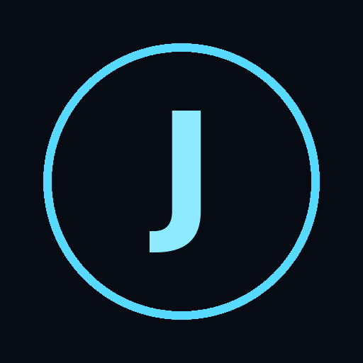

JARVIS
Assistente vocale
Microfono disattivato
Backend AI non configurato
Impostazioni

INATTIVO
Volume rilevato
Tu
—
Jarvis
—
Attiva microfono
Parla ora
Interrompi voce
Cronologia
Scrivi un messaggio
Invia
IMPOSTAZIONI
Attivazione con «Ehi Jarvis»
Attivazione con due battiti di mani
Sensibilità clap:
Più alta = rileva battiti più deboli (più falsi positivi).
Voce di Jarvis
Velocità voce:
Endpoint backend AI (opzionale, HTTPS)
Se vuoto, Jarvis usa solo comandi locali (ora, data, aiuto). Riceve POST JSON {message, history, lang} e deve rispondere {reply}.
Chiudi